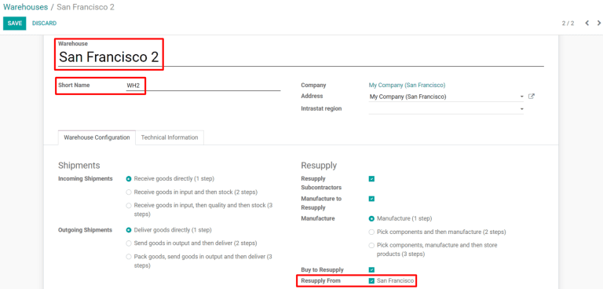
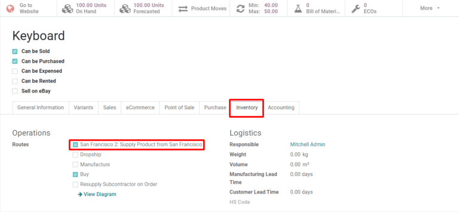
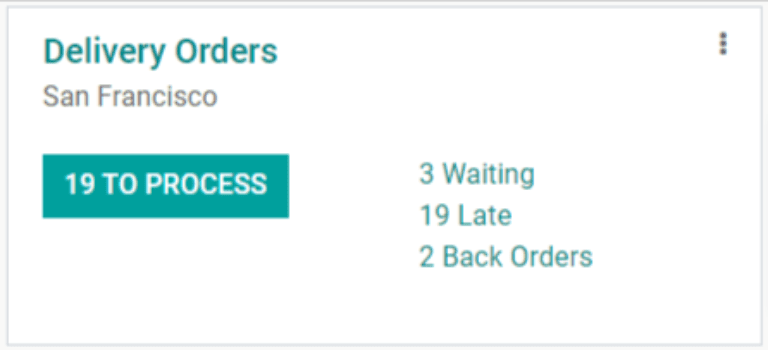

Trasladar productos entre almacenes mediante reabastecimientos¶
Con frecuencia, las empresas que utilizan varios almacenes necesitan trasladar artículos entre ellos. Esto se conoce como un traslado interalmacén. La aplicación Inventario de Odoo gestiona los procesos administrativos de los traslados internos para garantizar que el conteo de inventario sea preciso durante y después del traslado. Este documento explicará cómo llevar a cabo un traslado entre almacenes mediante el reabastecimiento.
Configurar los almacenes para el reabastecimiento interalmacenes¶
Primero, asegúrese de que la función rutas multietapa está habilitada. Para hacerlo, vaya a y seleccione la casilla correspondiente en la sección almacén. Esto proporciona opciones de configuración adicionales al crear un segundo almacén, las cuales son necesarias para los reabastecimientos interalmacén.
De forma predeterminada, Odoo tiene configurado un almacén principal. Si no ha creado un almacén adicional, puede hacerlo en el módulo Inventario, en . También puede seleccionar el almacén al que se transferirán los productos en la página de almacenes y hacer clic en editar para cambiar sus ajustes. Configure el almacén como se muestra a continuación:
Almacén: elija un nombre que no utilice para otro almacén (por ejemplo,
Almacén alterno).Nombre corto: elija un nombre corto que se utilizará para identificar el almacén (por ejemplo,
ALT_WH).
Haga clic en guardar para crear el nuevo almacén. Además, aparecerá un nuevo campo reabastecer de en el formulario del almacén. Haga clic en editar y luego marque la casilla junto al almacén que se utilizará para reabastecer el almacén que está configurando.
Nota
Con propósitos de demostración, el nombre del almacén del que se transfieren los productos (salida) será «San Francisco» y el almacén al que se transfieren los productos (entrada) será «San Francisco 2».
Configurar productos para reabastecimientos interalmacenes¶
También debe configurar los productos de forma adecuada para que se puedan transferir entre almacenes. Vaya a y seleccione un producto existente o cree uno si es necesario.
Después, vaya a la pestaña inventario del formulario de producto y seleccione la casilla X: suministrar producto de Y, donde X es el almacén que recibe los productos del traslado y Y es el almacén del que se trasladan los productos.
Reabastecer de un almacén a otro¶
En el módulo , seleccione y elija el producto que se reabastecerá. Haga clic en el botón reabastecer en la parte superior izquierda de la página de producto y complete el formulario emergente como se muestra a continuación:
Cantidad: el número de unidades que se enviarán al almacén que se debe reabastecer.
Fecha programada: la fecha programada en la que se llevará a cabo el reabastecimiento.
Almacén: el almacén que se reabastecerá.
Rutas preferidas: seleccione
X: suministrar producto de Y, donde X es el almacén que se reabastecerá y Y es el almacén del que se trasladarán los productos.
Hacer clic en confirmar creará una orden de entrega para la salida del almacén, junto con una recepción para el almacén que recibirá el producto. Dependiendo de los ajustes de configuración para la entrada y salida de los almacenes, procesar las órdenes de entrega y recepciones puede necesitar de entre uno y tres pasos. Este documento explicará cómo procesar entregas y recepciones en un solo paso.
Procesar la orden de entrega¶
La primera etapa de una orden de reabastecimiento es procesar la entrega del almacén del que se traslada el producto. En el tablero de , seleccione el botón X por procesar en la tarjeta órdenes de entrega para la salida del almacén, luego seleccione la orden de entrega que se creó para el reabastecimiento. En la página de la orden de entrega, haga clic en el botón comprobar disponibilidad en la parte superior izquierda para reservar la cantidad del producto que se trasladará. Una vez que se realice la entrega, haga clic en el botón validar para registrar las cantidades enviadas.
Procesar la recepción¶
Una vez que la mercancía llega al almacén de entrada, también se debe procesar la recepción que se creó para ese almacén. Regrese al tablero de y seleccione el botón X por procesar en la tarjeta de recepciones para el almacén de entrada, luego en la que se creó para el reabastecimiento. En la página de recepciones, haga clic en el botón validar en la parte superior izquierda de la página para registrar las cantidades recibidas.

Después de procesar la recepción, los productos transferidos ahora aparecerán en el inventario del almacén de entrada. Puede ver los números de existencias para ambos almacenes si regresa a la página de producto y selecciona el botón X unidades disponibles en la parte superior de la pantalla.
Automatizar el reabastecimiento interalmacenes¶
Al utilizar las reglas de reordenamiento es posible automatizar el proceso de reabastecimiento de un almacén a otro.
Para empezar, vaya a y elija el producto que se reabastecerá. En la página de producto, seleccione el botón inteligente reglas de reordenamiento en la parte superior del formulario. Después, en la siguiente página, haga clic en crear para configurar el formulario como se muestra a continuación:
Ubicación: la ubicación que la regla de reordenamiento reabastecerá cuando se activa. En este caso, es el almacén de entrada.
Cantidad mínima: la regla de reordenamiento se activará cuando la cantidad disponible en el almacén de entrada esté por debajo de este número.
Cantidad máxima: cuando se activa la regla de reordenamiento, el producto se reabastecerá en el almacén de entrada hasta la cantidad indicada.
Cantidad múltiple: especifique si el producto se debe reabastecer por lotes de una cantidad determinada. Por ejemplo, un producto se puede reabastecer en lotes de 20.
UdM: la unidad de medida que se utiliza para reordenar el producto. Este valor puede ser
unidadeso una unidad de medida específica para peso, longitud, etc.
Para terminar, haga clic en guardar, esto creará la orden de reordenamiento. Cuando el planificador se ejecute de forma automática cada día, se creará un traslado para cada regla de reordenamiento activada.
Truco
Para activar las reglas de reordenamiento de forma manual, vaya al módulo y seleccione , luego haga clic en el botón de color verde ejecutar planificador de la ventana emergente.
Después de la ejecución del planificador, se creará una orden de entrega y una de recepción para la salida y entrada al almacén, respectivamente. Tanto la orden de entrega como la recepción se deben procesar con el mismo método que se explicó anteriormente.